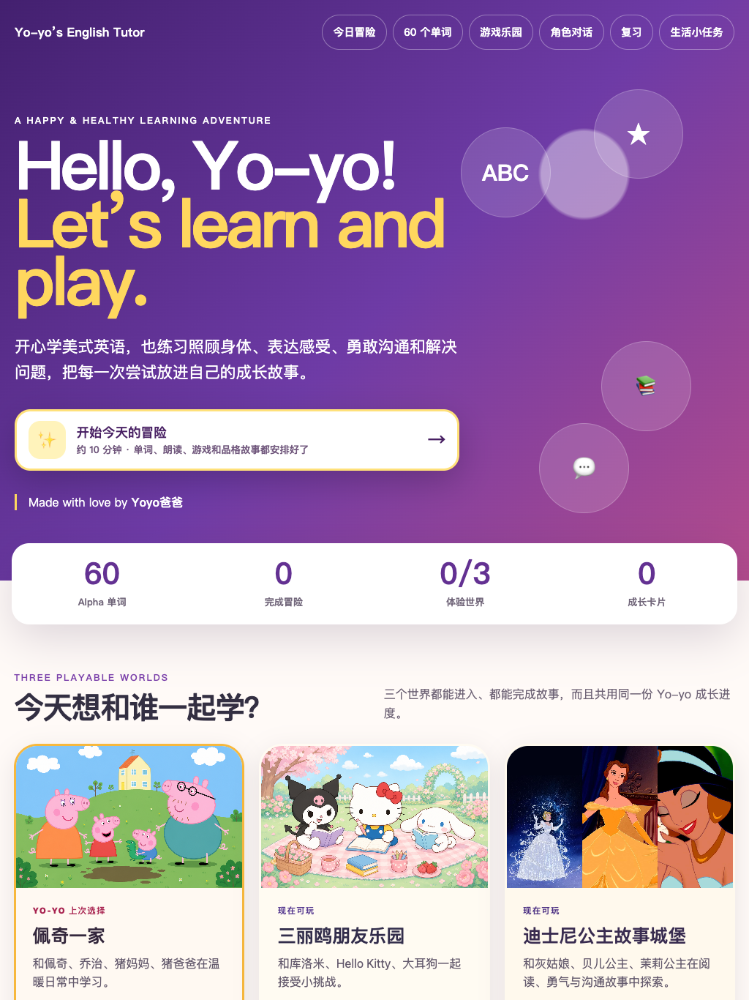

家庭原型实现变快后，教育选择更加具体
广东职业院校人工智能通识教育分享 · 2026
职业教育需要怎样的 AI 通识课
从企业用人、教育实践与技术演进三个视角，讨论真实任务、能力证据与责任边界
辛海洋可可乐博 CEO
2026 年 8 月 28 日深圳城市职业学院（深圳技师学院）
第一章
第一章 · 实践全景


第一章 · 家庭原型
我依据女儿的兴趣设计英语活动，也把自己看重的品格融入内容。原型很快可以使用，但培养目标、适龄性、学习迁移与效果验证仍需持续判断。
家庭内部学习原型；截图仅用于说明实践过程，不作为学习效果证据。
第一章 · 教师共创
教师将教学判断转化为规则，在课堂运行后依据过程证据继续修订。
来源：UNESCO 暂定议程 p.8；正式邀请函（2026-07-21）。邀请对应交流安排，不等同于项目认证。
第一章 · 企业现场
每个角色只覆盖局部环节，信息、假设与责任在接口处反复转译。
全链理解减少信息损耗，分段主责保证判断质量，交叉复核控制接口风险。
概念依据：2020 Scrum Guide；共享心智模型、交互记忆、专长协调与团队协作研究。AI 扩大个体覆盖范围属于实践推演。
第一章 · 历史参照与实践推演
从施振荣的“微笑曲线”，到 AI 时代的工作价值曲线
当组装日益标准化，研发与品牌服务两端呈现较高附加价值；制造仍是产业基础。
一般生成制作的相对稀缺性下降；高难度工程、专业判断与现场实施仍然重要。
AI 压缩的是一般生产成本，不是问题判断与结果责任。
左图：施振荣“微笑曲线”，1992；据 Acer 与智荣基金会资料重绘。右图：演讲者基于 AI-native 工作实践提出的概念模型，2026。
第二章
第二章 · 现实背景
规模以上高技术制造业增加值增速
31.2%工业机器人产量增速
全球就业处于对生成式 AI 有某种潜在暴露的职业
3.3%全球就业处于最高暴露梯度
广东数据描述产业技术条件，ILO 数据估计职业暴露范围；二者均不能直接测量本地岗位增减或课程效果。
来源：广东省统计局《2024 年广东经济运行基本情况和特点》；ILO–NASK, Generative AI and Jobs: A Refined Global Index of Occupational Exposure, 2025。
第二章 · 工作单位
工作单位扩展为“一段任务”后，人的职责也随之扩展到任务组织与过程监督。
第二章 · 授权边界
系统可在规则范围内执行，并保留过程记录。
系统完成初步工作，由具备资格的人独立检查。
人保留决策、批准、接管和最终责任。
自动化程度不是成熟度指标；能够说明授权范围、停止条件和责任主体，才是系统能力的一部分。
第二章 · 人才结构
团队层面的完整性来自共同底座与差异化专长：成员理解完整闭环，关键判断仍由相应专业主责。
团队合在一起拥有完整能力；成员以不同专业纵深形成互补。
第二章 · 完整生命周期
共同底座支持协同，差异化专长支持判断，明确主责与交叉复核共同守住结果。
第二章 · 企业判断
可生成不等于可交付；可交付还需要专业判断、测试、现场采用和责任。
第二章 · 判断情境
如果无法说明关键决策由谁作出、怎样发现错误、哪些环节未经验证，以及出现问题时由谁接管，这项任务尚未形成可靠的能力证据。
第三章
第三章 · 长期主线
工具和应用可以更替；可治理的任务状态、过程证据、评价标准与教师经验需要连续积累。
第三章 · 已有基础
共同底座面向全校，专业任务由不同集群继续校准。
课程已具备任务化、项目化和专业场景化的入口。
教师、平台、实训资源和行业评价形成实施支撑。
课程不再依赖单次采购或个别教师的个人经验。
第一阶段解决了课程“能开、能教、能持续改”的基础问题；职业能力是否形成，仍需进入真实任务继续验证。
依据：深圳城市职业学院（深圳技师学院）《AI 通识课程建设汇报》，2026-08-28，第 18、25—34 页。
第三章 · 下一阶段
第三章 · 课程边界
明确用户、现场、约束与验收标准
配置系统、资料、人员和工作顺序
测试正常路径、边界情形与失败条件
记录决策、权限、风险与人工接管
工具数量不是课程覆盖度；学生留下的能力证据才是。
第三章 · 专业适配
读取工单与传感记录，检索标准，形成检查步骤；涉及设备安全的结论由专业人员复核。
理解品牌与平台规则，生成多版本内容，检查版权、事实与视觉一致性。
整理事实，匹配服务规则，形成初步建议；投诉、权益与高影响决定转由人工处理。
通用模型提供通用能力；专业价值来自领域标准、过程证据与明确责任主体。以上任务仅为示例，须由相应专业校准。
第三章 · 能力证据
第三章 · 可靠性
只展示成功结果，会遮蔽学生是否具备真实环境中的风险判断与恢复能力。
第四章
第四章 · 责任边界
第四章 · 企业贡献
说明服务对象、业务流程、岗位情境与交付结果。
说明数据、接口、安全、成本、维护与现场限制。
提供行业规范、质量要求、失败条件与升级规则。
提供版本变化、异常记录、采用反馈与维护经验。
工程条件保证项目能够运行，教学设计决定它能否成为一门有效课程。
第四章 · 最小试点
用户、场景、专业约束、AI 授权和交付标准清楚。
课时安排、教师支持、学生过程、异常与修订可追踪。
结果、过程、验证和责任证据具有一致的最低要求。
说明可复制部分、专业差异、失败条件与下一轮调整。
先建立共同语言和可比较证据，再讨论扩大规模与跨校联盟。
结论 · 交给圆桌
未来人才需要定义问题、组织人机协作、验证结果，并在必要时接管和负责。